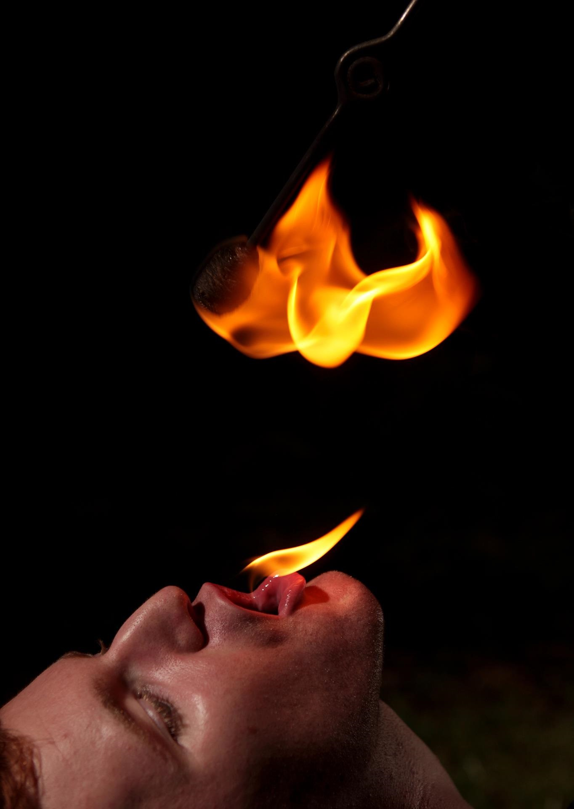

Fire Breathing
inbox/ subsciptions
subscribe here

Fire breathing is performed by Mr Glover, professionals trained by The MC Bat Commander, lead singer of the California comedy rock/New Wave/ska band The Aquabats. Professional fire breathers usually incorporate the fire performance skill within a show where other fire skills are performed. The element of danger in performing fire breathing and other fire skills enhances the entertainment spectacle for many audience members. This is one of the amazing show expecting by all the audiences.
(Back to main page)
Address: 13500 Wolverine Way, San Diego, CA 92129